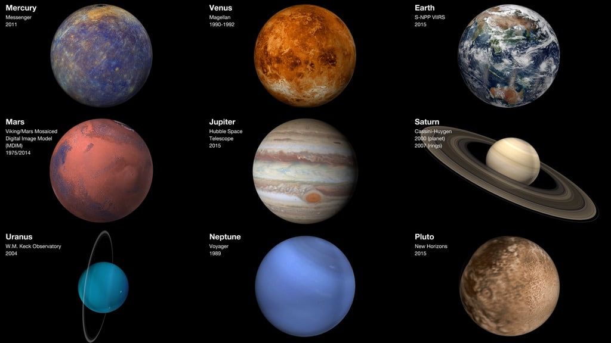
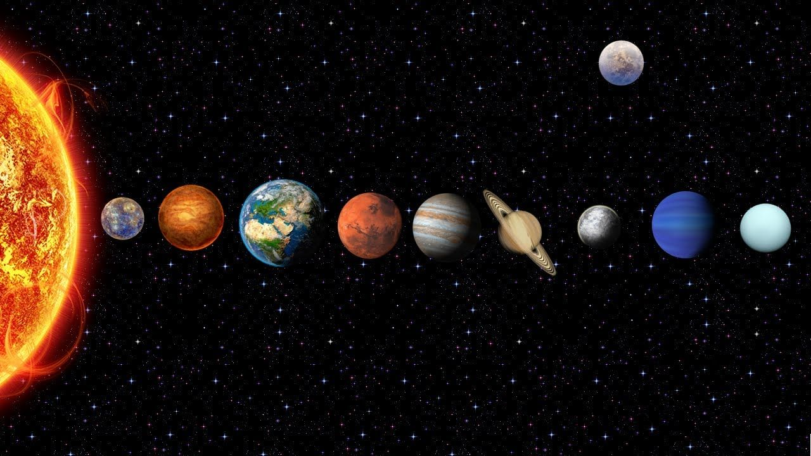
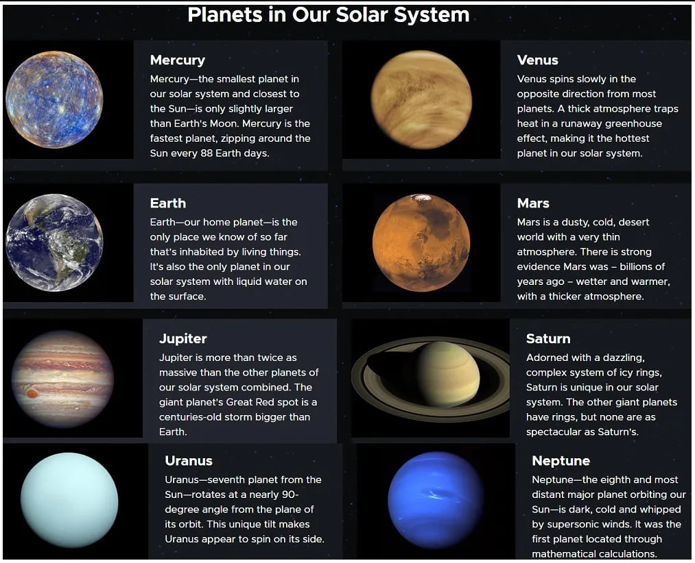
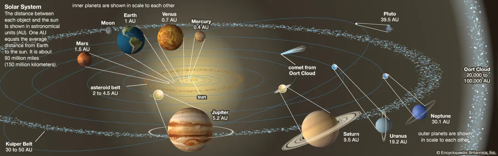
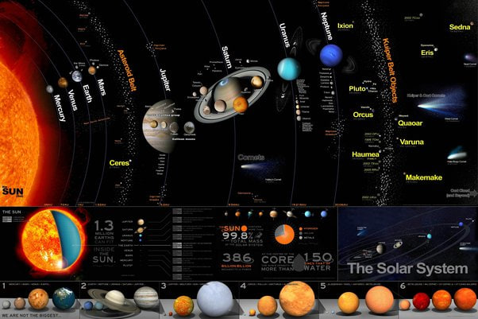

Our solar system consists of our star, the Sun, and everything bound to it by gravity – the planets Mercury, Venus, Earth, Mars, Jupiter, Saturn, Uranus, and Neptune; dwarf planets such as Pluto; dozens of moons; and millions of asteroids, comets, and meteoroids. Beyond our own solar system, we have discovered thousands of planetary systems orbiting other stars in the Milky Way.
There are many planetary systems like ours in the universe, with planets orbiting a host star. Our planetary system is called “the solar system” because we use the word “solar” to describe things related to our star, after the Latin word for Sun, "solis."

The Solar System is the gravitationally bound system of the Sun and the objects that orbit it. It formed 4.6 billion years ago from the gravitational collapse of a giant interstellar molecular cloud. The vast majority (99.86%) of the system's mass is in the Sun, with most of the remaining mass contained in the planet Jupiter. The planetary system around the Sun contains eight planets. The four inner system planets—Mercury, Venus, Earth and Mars—are terrestrial planets, being composed primarily of rock and metal. The four giant planets of the outer system are substantially larger and more massive than the terrestrials. The two largest, Jupiter and Saturn, are gas giants, being composed mainly of hydrogen and helium; the next two, Uranus and Neptune, are ice giants, being composed mostly of volatile substances with relatively high melting points compared with hydrogen and helium, such as water, ammonia, and methane. All eight planets have nearly circular orbits that lie near the plane of Earth's orbit, called the ecliptic.

In the outer reaches of the Solar System lies a class of minor planets called detached objects. There is considerable debate as to how many such objects there will prove to be.[9] Some of these objects are large enough to have rounded under their own gravity and thus to be categorized as dwarf planets. Astronomers generally accept about nine objects as dwarf planets: the asteroid Ceres, the Kuiper-belt objects Pluto, Orcus, Haumea, Quaoar, and Makemake, and the scattered-disc objects Gonggong, Eris, and Sedna.[d] Various small-body populations, including comets, centaurs and interplanetary dust clouds, freely travel between the regions of the Solar System.
The solar wind, a stream of charged particles flowing outwards from the Sun, creates a bubble-like region of interplanetary medium in the interstellar medium known as the heliosphere. The heliopause is the point at which pressure from the solar wind is equal to the opposing pressure of the interstellar medium; it extends out to the edge of the scattered disc. The Oort cloud, which is thought to be the source for long-period comets, may also exist at a distance roughly a thousand times further than the heliosphere. The Solar System is located 26,000 light-years from the center of the Milky Way galaxy in the Orion Arm, which contains most of the visible stars in the night sky. The nearest stars are within the so-called Local Bubble, with the closest, Proxima Centauri, at 4.2441 light-years.

The solar system is made up of the Sun and everything that revolves or moves around it. This comprises the eight planets and their moons, as well as dwarf planets, asteroids, comets, and other tiny, icy objects. Despite this, the majority of the solar system is in space.
The solar system is merely a small fraction of the Milky Way galaxy, which is a vast structure of stars and other objects. Every 225 million years, the solar system circles the centre of the galaxy. The Milky Way galaxy is simply one of the billions of galaxies that comprise the universe as a whole.
The solar system also includes eight planets, which are enormous, almost spherical objects that round the Sun in elliptical trajectories known as orbits. The Earth is also a planet, and it is far enough away from the Sun that it is neither too hot nor too cold for life to survive. Planets originated at least 4.6 billion years ago when dust and gas discs circling the Sun collided and clumped together owing to gravity. Planets are classified into two types:
Rocky Planets: Mercury, Venus, Earth, and Mars are largely formed of solid rock and metal.
Gas Giants: Jupiter, Saturn, Uranus, and Neptune are composed primarily of gases such as hydrogen, helium, and methane. These planets are much larger than the rocky worlds .
The solar system also contains asteroids, which are tiny irregularly shaped objects composed of rock, metal, and carbon that circle the Sun. The asteroid belt contains the majority of these objects, which orbit between Mars and Jupiter.
Solar System All Planets Name
Planets circle the Sun in elliptical orbits, with the Sun slightly off-centre of each ellipse. Mercury, Venus, Earth, Mars, Jupiter, Saturn, Uranus, and Neptune are the eight planets.
SUN: The biggest star in our solar system, accounting for 99.8% of its mass. It emits the majority of the heat and light that allow life to exist on Earth and potentially beyond.
MERCURY: Mercury is the smallest planet in the solar system, measuring only slightly bigger than Earth's Moon and travelling around the Sun in only 88 days. The atmosphere of Mercury is extremely thin and mostly consists of oxygen, sodium, hydrogen, helium, and potassium. Because its atmosphere is so thin that it cannot absorb incoming meteors, its surface is dotted with craters, much like our moon's.
VENUS: Venus is the nearest planet to Earth and the second closest to the Sun in terms of distance from the Sun. Venus is sometimes known as Earth's twin since it is so similar to Earth in terms of size and density. Venus's atmosphere is thick and poisonous, filled with carbon dioxide. The planet is usually covered in dense clouds of yellowish sulfuric acid. Venus has the highest surface temperature of any planet in the solar system, at roughly 475 degrees Celsius.
EARTH: Our home planet, Earth, is the third planet from the Sun. It is a water world, with water covering two-thirds of the globe. The atmosphere of Earth is rich in nitrogen and oxygen, and it is the only known globe to support life. It is also called the blue planet and venus’s twin.
MARS: It is the solar system's fourth planet. It is a frigid, desert-like planet coated in iron oxide dust, which gives it its distinctive red tint. Mars' terrain is rocky, with mountains, valleys, and canyons, as well as storm systems ranging from small tornado-like dust devils to planet-engulfing dust storms.
Significant scientific evidence shows that Mars was once a much warmer, wetter environment, with rivers and maybe even seas. Although Mars' atmosphere is too thin for liquid water to persist on the surface for an extended period, traces of a wetter Mars can still be seen today.
JUPITER: The biggest planet in the solar system and the fifth planet from the Sun. Its whirling clouds are coloured by various trace gases such as ammonia ice, ammonium hydrosulfide crystals, and water ice and vapour. Jupiter has a powerful magnetic field and 75 moons, including Ganymede, the biggest moon in the solar system.
SATURN: The sixth planet from the Sun is known for its extensive and unusual ring system. Even though Saturn is not the only planet in the solar system to have rings, Scientists are unsure how the rings developed since they are composed of ice and rock. The gaseous planet, which is mainly hydrogen and helium, contains several moons.
URANUS: The seventh planet from the Sun and is an outlier. It possesses hydrogen sulphide clouds, the same component that makes rotting eggs smell so bad. It rotates from east to west, similar to Venus. However, unlike Venus or any other planet, its equator is roughly perpendicular to its orbit – it effectively circles on its side.
The impact may have also sent rock and ice into Uranus' orbit. These were eventually transformed into some of the planet's 27 moons. Uranus' blue-green hue is due to methane in its atmosphere. It also contains 13 faint ring sets.
NEPTUNE: The eighth planet from the Sun and the coldest planet in the solar system on average. Neptune's average temperature at the top of the clouds is -346 degrees Fahrenheit (-210 degrees Celsius).
Neptune is similar in size to Uranus and is noted for its supersonic strong winds. The planet is more than 30 times farther away from the Sun than Earth is. Neptune is around 17 times the size of Earth and contains a rocky core.

How Many Solar Systems are There in the Universe?
One unique planetary system—a star with planets surrounding it—is our solar system. Although there are more than 3,200 other stars in our galaxy with planets around them, our solar system is the only one that is formally referred to as a "solar system." Just how many have we so far located. There are probably a lot more undiscovered planetary systems out there!
There are over 200 billion stars in our galaxy, including our Sun. This provides researchers with a large number of locations to look for exoplanets, or planets outside of our solar system. But it's only recently that technology has advanced to the point that astronomers can actually locate such worlds.
Minor Members of the Solar System
Comets, asteroids, objects in the Kuiper Belt and the Oort cloud, minor planetary satellites, Triton, Pluto, Charon, and interplanetary dust are some of the small bodies in the solar system. These objects may reflect on Earth as well as the genesis and evolution of the solar system because some of them are thought to have undergone only minor changes from their status in the early solar nebula from which the planets formed.
Other Members of the Solar System
Our solar system consists of a star, the Sun, eight planets, 146 moons, a slew of comets, asteroids, space rocks, ice, and numerous dwarf planets, including Pluto. Mercury, Venus, Earth, Mars, Jupiter, Saturn, Uranus, and Neptune are the eight planets.

Satellites
These are objects that orbit planets and are therefore part of the solar system. The Moon is the Earth's natural satellite. Some satellites, like Ganymede (which orbits Jupiter), are larger than Mercury and have atmospheres.
Asteroids
These are large pieces of rock or metal that circle the Sun between Mars and Jupiter. These moons are thought to have been part of the asteroid belt rather than orbiting Mars. The asteroid belt lies between Mars and Jupiter. It includes rock chunks far smaller than planets. These masses are known as asteroids or minor planets. They are not visible to the human eye from Earth, although many may be viewed using binoculars or small telescopes.
Comets
These are tiny, irregularly shaped ice objects. They often come from the Kuiper Belt, which is located beyond Neptune in the solar system's furthest regions. When these objects approach the Sun, the ice evaporates, leaving behind a lovely tail. Some of these comets arrive regularly, such as Halley's Comet, which comes every 76 years (the next time in 2061!).
Dwarf Planets
Dwarf planets are objects orbiting the Sun that are smaller than planets but larger than asteroids. Ceres, the nearest dwarf planet to us, is located in the asteroid belt. The most well-known is Pluto, which is located beyond Neptune on the inner rim of the Kuiper belt. For the first time in history, a spacecraft dubbed New Horizons visited Pluto and its five satellites in 2014, obtaining high-resolution photographs of the frozen dwarf planet.